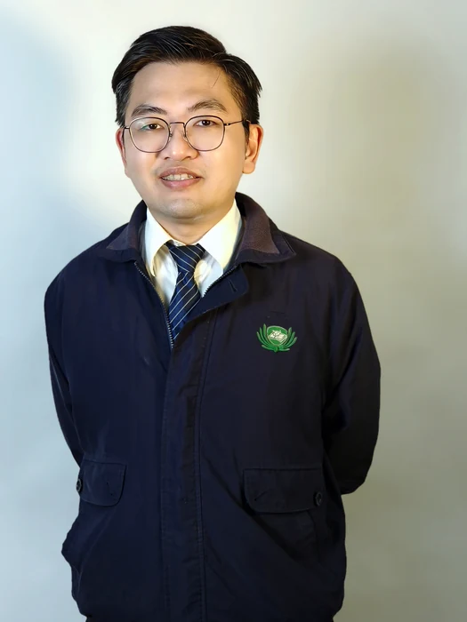

系所原始資料集
Dr. Yu-Ming Kuo, Associate Professor, Dean of the Office of Global Affairs
系所原始資料，保留官方發布語言。
以下資料保留官方發布原文；文件與外部連結亦維持原始語言。
Dr. Yu-Ming Kuo, Associate Professor, Dean of the Office of Global Affairs

| Academic Position: | Ph.D. in Department of Business Administration at National Chung Cheng University, Taiwan. |
|---|---|
| Research Expertise | Marketing Management, Consumer Behavior, Human Resource Management. |
| Phone | 03-8572158 ext. 2486 (Office) |
| ss248@gms.tcu.edu.tw | |
| Pure Expert Talent Database System | https://tcu.elsevierpure.com/zh/persons/mark-kuo |